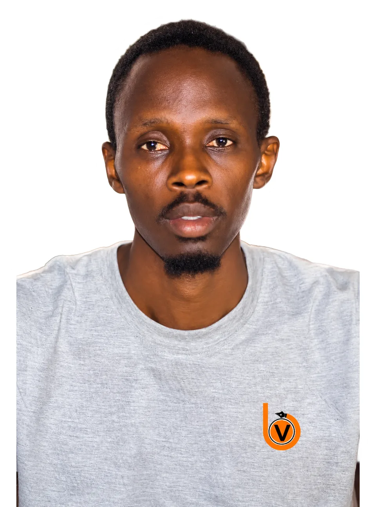

Portfolio · Baol Vision
2026
Directeur artistique & graphiste
Cheikh Awa Balla Diop
Identités visuelles &
communication créative · Touba
cabd-portfolio.vercel.app

Outils créatifs
- PsAdobe Photoshop
- AiAdobe Illustrator
- PrAdobe Premiere Pro
- FgFigma
Fondateur & directeur créatifBaol Vision, depuis 2022
Branding · Affiches · Packaging36+ projets, 30+ marques